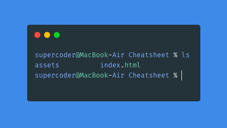
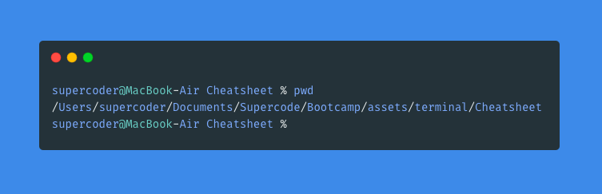
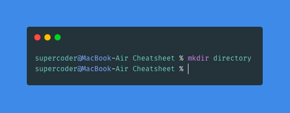
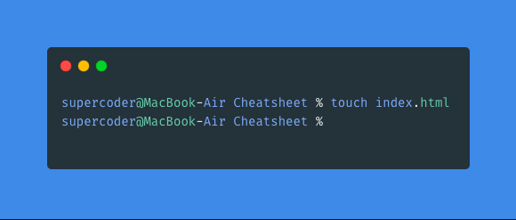
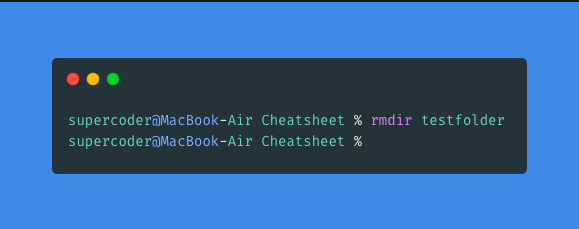
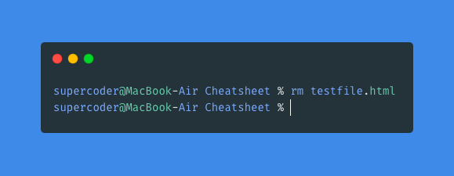

The cheatsheet contains the most important commands for the Terminal and for Githumb.
Commands - TERMINAL
Command 1: "list"

The command "list" shows all folders or files in the directory.
Command 2: "pwd"

The command "pwd" shows the user the current position or path.
Command 3: "mkdir"

The command "mkdir" creates a new folder.
Command 4: "touch"

The command "touch" creates a new file.
Command 5: "rmdir"

The command "rmdir" deletes an empty directory.
Command 6: "rm"

The command "rm" deletes a file.
Commands - Github
Command 1: "git diff"
The command "git diff" shows deviations in the code in the terminal. The deviations have to be saved in the code before they are shown in the Terminal.
Command 2: "git log"
The command "git log" provides information to date, user, commit ID etc.
Command 3: "git branch branchname"
The command "git branch branchname" creates a new branch and indicates the name of the branch.
Command 4: "git checkout newbranch"
The command "git checkout newbranch" leaves the current branch and indicates the name of the new branch which will be entered.
Command 5: "git branch -a"
The command "git branch -a" indicates all branches that are available in the repository.
Command 6: "git merge branchtobemerged"
The command "git merge branchtobemerged" merges the branch to be merged into the master branch.